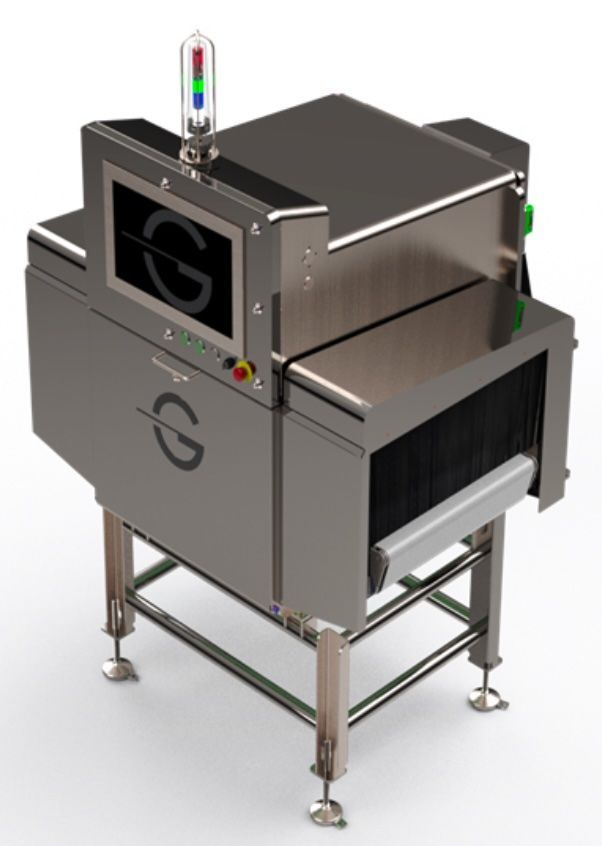

HRX660
Standard HRX inspection system for larger-format food applications that need high-resolution x-ray inspection and platform connectivity.
- Inspection opening: 639 x 254 mm
- Conveyor: 60 x 30 in
- Throughput: up to 60 m/min line speed, product-dependent
- Typical applications: protein, dairy blocks, packaged frozen foods, large-format products